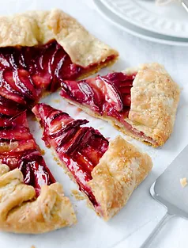

Mon but est de connaître vos attentes, vos
motivations, vos habitudes alimentaires, vos goûts, votre mode de vie,
vos activités physiques, votre environnement, l'historique de votre
poids, de votre maladie, vos antécédents familiaux, médicaux, vos
contraintes ... afin de personnaliser la prise en charge. Et pour
commencer notre travail ensemble, je vous enverrai un questionnaire à
compléter avant notre premier rendez-vous. Je réalise un bilan
nutritionnel. Nous mettons en place ensemble les premiers axes de
travail à visée thérapeutique, éducative ou préventive et je vous
envoie un dossier diététique personnalisé qui vous accompagnera le
long des consultations de suivi.
